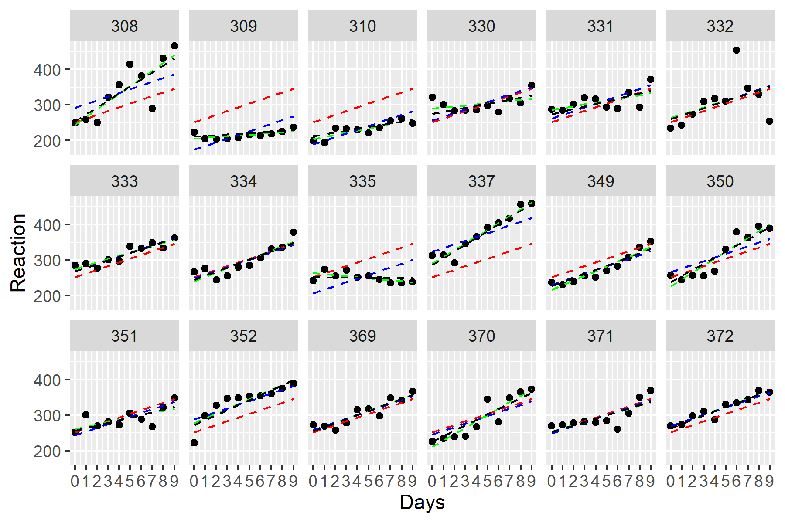
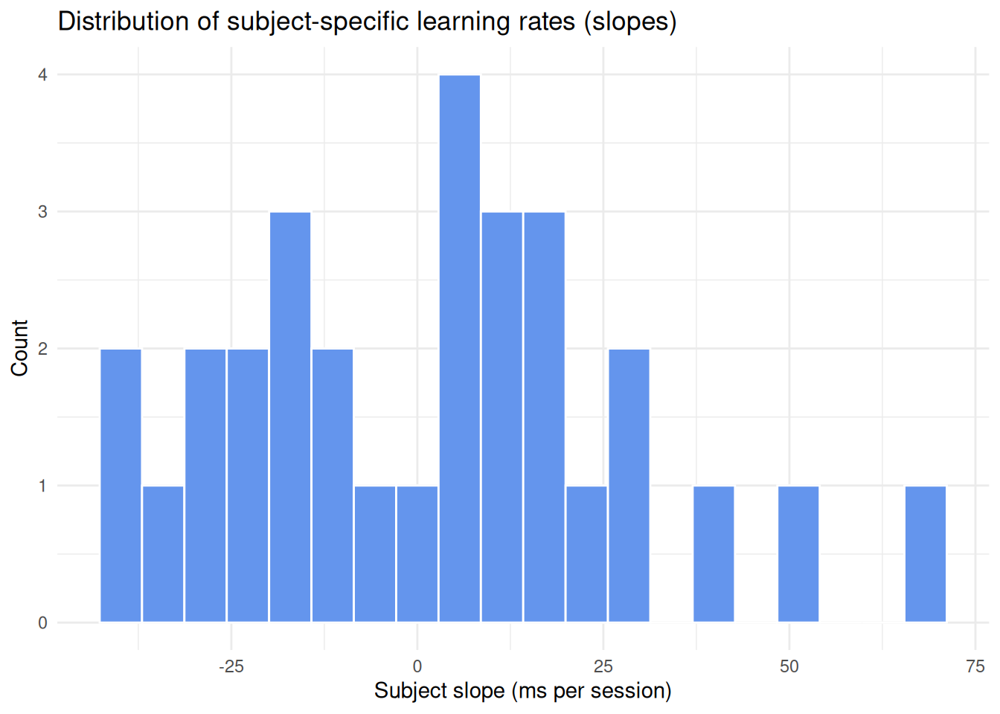
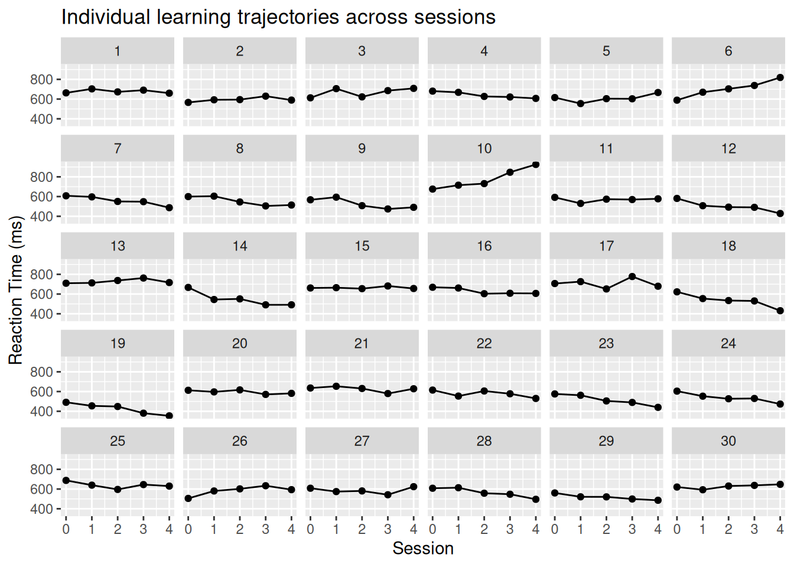
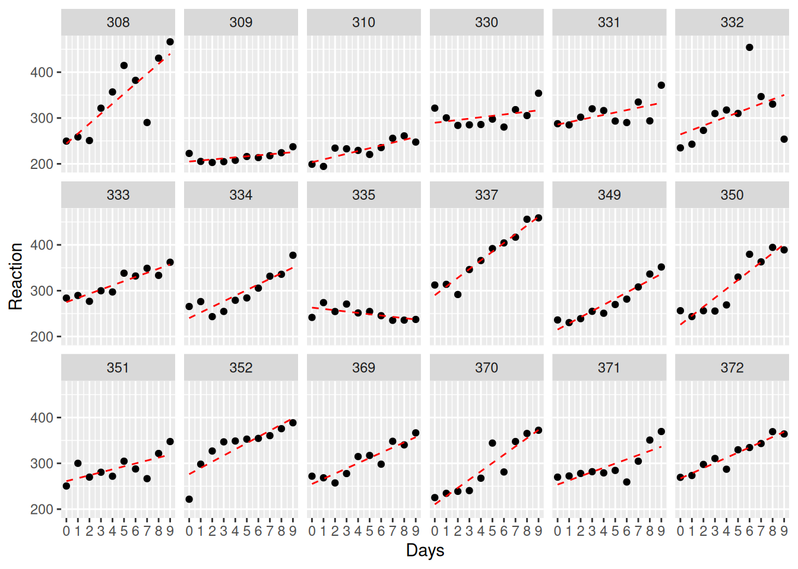
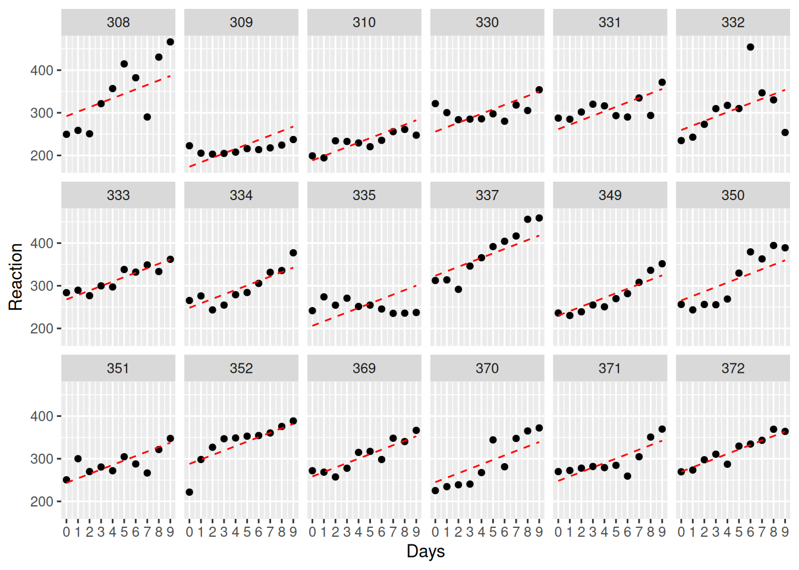
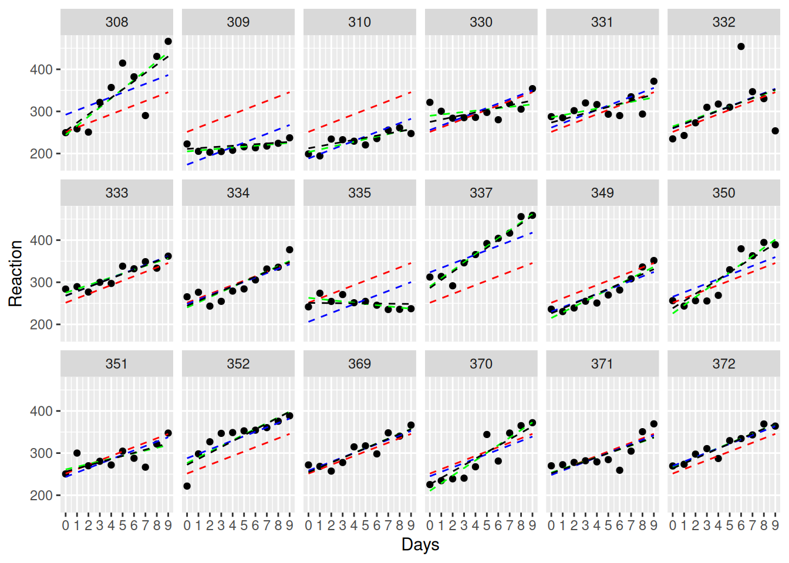

Loading required package: MatrixWhy random slopes?
… and why random intercepts are often not enough
R
lme4
multilevel regression
Using lme4, I show why random slopes is often needed in biomedical research and experiments
Welcome to the website.
Currently, this is a test. The site will expand over the next couple of months.
The content will be small blog-styled pieces of statistical material.
Multi-level models and why random slopes matter

In this post, we’ll discuss why random slopes are often of special concern in health science data and biometrics. We will use lme4 and ggplot2 to do so. The data set we’ll use to demonstrate this comes from …
A brief look at the data:
Code
str(sleepstudy) # for more info, consult ?lme4::sleepstudy for the lme4 documentation'data.frame': 180 obs. of 3 variables:
$ Reaction: num 250 259 251 321 357 ...
$ Days : num 0 1 2 3 4 5 6 7 8 9 ...
$ Subject : Factor w/ 18 levels "308","309","310",..: 1 1 1 1 1 1 1 1 1 1 ...Code
sleepstudy |>
ggplot(aes(y=Reaction, x=Days)) +
facet_wrap(~ Subject, ncol=6) +
geom_point() +
geom_line() +
scale_x_continuous(limits=c(0, 9),breaks=c(0:9))
The ANOVA approach (full pooling)
Code
anova_approach <- lm(Reaction ~ 1 + Days, sleepstudy)
summary(anova_approach)
Call:
lm(formula = Reaction ~ 1 + Days, data = sleepstudy)
Residuals:
Min 1Q Median 3Q Max
-110.848 -27.483 1.546 26.142 139.953
Coefficients:
Estimate Std. Error t value Pr(>|t|)
(Intercept) 251.405 6.610 38.033 < 2e-16 ***
Days 10.467 1.238 8.454 9.89e-15 ***
---
Signif. codes: 0 '***' 0.001 '**' 0.01 '*' 0.05 '.' 0.1 ' ' 1
Residual standard error: 47.71 on 178 degrees of freedom
Multiple R-squared: 0.2865, Adjusted R-squared: 0.2825
F-statistic: 71.46 on 1 and 178 DF, p-value: 9.894e-15Here is the model prediction - notice how every participant is assumed to have the same initial value and linear trajectory. This is due to pooling, an assumption from ANOVA.
Code
ggplot(sleepstudy, aes(Days, Reaction, group=Subject)) +
facet_wrap(~Subject, ncol=6) +
geom_point() +
geom_line(aes(y=fitted(anova_approach)), linetype=2, color = "red") +
scale_x_continuous(limits=c(0, 9),breaks=c(0:9))
No pooling - treating every participant as their own experiment…
If we want to be more sensitive to individual variability, we need to allow participants to be modeled more individually. This can be done by computing linear regression for each participant, treating them as individual cases with no overlap.
Code
no_pooling <- lmList(Reaction ~ Days | Subject, sleepstudy)
summary(no_pooling)Call:
Model: Reaction ~ Days | NULL
Data: sleepstudy
Coefficients:
(Intercept)
Estimate Std. Error t value Pr(>|t|)
308 244.1927 15.04169 16.23439 2.419368e-34
309 205.0549 15.04169 13.63244 1.067180e-27
310 203.4842 15.04169 13.52802 1.993900e-27
330 289.6851 15.04169 19.25882 1.122068e-41
331 285.7390 15.04169 18.99647 4.646933e-41
332 264.2516 15.04169 17.56795 1.236403e-37
333 275.0191 15.04169 18.28379 2.303436e-39
334 240.1629 15.04169 15.96649 1.135574e-33
335 263.0347 15.04169 17.48705 1.946826e-37
337 290.1041 15.04169 19.28667 9.653936e-42
349 215.1118 15.04169 14.30104 1.983389e-29
350 225.8346 15.04169 15.01391 2.939145e-31
351 261.1470 15.04169 17.36155 3.943049e-37
352 276.3721 15.04169 18.37374 1.402577e-39
369 254.9681 15.04169 16.95077 4.023936e-36
370 210.4491 15.04169 13.99106 1.253782e-28
371 253.6360 15.04169 16.86221 6.656453e-36
372 267.0448 15.04169 17.75365 4.373979e-38
Days
Estimate Std. Error t value Pr(>|t|)
308 21.764702 2.817566 7.7246464 1.741840e-12
309 2.261785 2.817566 0.8027444 4.234454e-01
310 6.114899 2.817566 2.1702769 3.162541e-02
330 3.008073 2.817566 1.0676139 2.874813e-01
331 5.266019 2.817566 1.8689956 6.365457e-02
332 9.566768 2.817566 3.3954013 8.857738e-04
333 9.142045 2.817566 3.2446604 1.462120e-03
334 12.253141 2.817566 4.3488388 2.574673e-05
335 -2.881034 2.817566 -1.0225257 3.082469e-01
337 19.025974 2.817566 6.7526272 3.315759e-10
349 13.493933 2.817566 4.7892159 4.115160e-06
350 19.504017 2.817566 6.9222924 1.356856e-10
351 6.433498 2.817566 2.2833528 2.387301e-02
352 13.566549 2.817566 4.8149886 3.683105e-06
369 11.348109 2.817566 4.0276282 9.081880e-05
370 18.056151 2.817566 6.4084212 1.964766e-09
371 9.188445 2.817566 3.2611283 1.385338e-03
372 11.298073 2.817566 4.0098697 9.718197e-05
Residual standard error: 25.59182 on 144 degrees of freedomCode
ggplot(sleepstudy, aes(Days, Reaction, group=Subject)) +
facet_wrap(~Subject, ncol=6) +
geom_point() +
geom_line(aes(y=fitted(no_pooling)), linetype=2, color = "red") +
scale_x_continuous(limits=c(0, 9),breaks=c(0:9))
Partial pooling
With random intercept only:
We can relax the assumption of pooling by allowing each participant to have their own intercept.
Code
RI_only <- lmer(Reaction ~ 1 + Days + (1 | Subject), sleepstudy)
summary(RI_only)Linear mixed model fit by REML ['lmerMod']
Formula: Reaction ~ 1 + Days + (1 | Subject)
Data: sleepstudy
REML criterion at convergence: 1786.5
Scaled residuals:
Min 1Q Median 3Q Max
-3.2257 -0.5529 0.0109 0.5188 4.2506
Random effects:
Groups Name Variance Std.Dev.
Subject (Intercept) 1378.2 37.12
Residual 960.5 30.99
Number of obs: 180, groups: Subject, 18
Fixed effects:
Estimate Std. Error t value
(Intercept) 251.4051 9.7467 25.79
Days 10.4673 0.8042 13.02
Correlation of Fixed Effects:
(Intr)
Days -0.371Note the fixed effect 10.4673 / 0.8042 = 13.0157921
Code
ggplot(sleepstudy, aes(Days, Reaction, group=Subject)) +
facet_wrap(~Subject, ncol=6) +
geom_point() +
geom_line(aes(y=fitted(RI_only)), linetype=2, color = "red") +
scale_x_continuous(limits=c(0, 9),breaks=c(0:9))
Comparing model predictions
Code
ggplot(sleepstudy, aes(Days, Reaction, group=Subject)) +
facet_wrap(~Subject, ncol=6) +
geom_point() +
geom_line(aes(y=fitted(anova_approach)), linetype=2, color = "red") +
geom_line(aes(y=fitted(no_pooling)), linetype=2, color = "green") +
geom_line(aes(y=fitted(RI_only)), linetype=2, color = "blue") +
geom_line(aes(y=fitted(RI_RS_corr)), linetype=2, color = "black") +
scale_x_continuous(limits=c(0, 9),breaks=c(0:9))
Conclusions
- While random intercept models are within the class of linear mixed-effect models, they are often difficult to find use cases for within cognitive neuroscience experiments.
- While accouting for individual starting differences is a set up from the ANOVA approach, it still assumes no variability between participants.
- Fitting mass linear models (no pooling) overcomes this problem. However, researchers often aim to generalize and make population-based conclusions. It is therefore not optimal for this use case.
- Linear mixed-effect models that are modeled appropriately to a specific data set is a great approach (partial-pooling). However, they quickly become tricky to set up when there are multiple predictors, groups, covariates, and especially interactions.